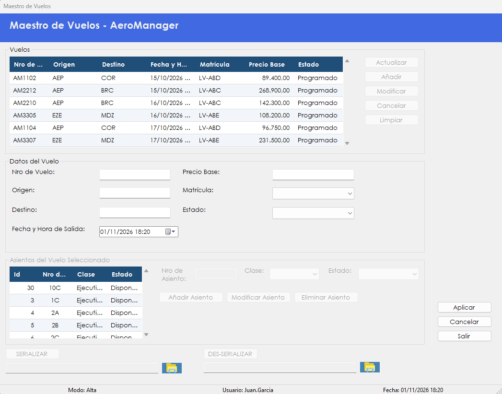

Administra los vuelos y sus asientos, y permite exportarlos a un archivo XML e importarlos para consultarlos.
Para vender un pasaje, primero tiene que existir el vuelo con sus asientos. Este maestro permite programar vuelos, indicando ruta, fecha, precio y aeronave, y cargar los asientos que se ofrecen a la venta.
Los vuelos no se borran: cuando uno no se va a realizar, se cancela. Un vuelo cancelado deja de estar disponible para la venta de pasajes.
La pantalla también permite guardar en un archivo XML los vuelos de la grilla, y cargar uno de esos archivos para ver su contenido.
Desde el menú principal, en Maestros › Maestro - Vuelos. La opción aparece si el rol del usuario incluye la patente correspondiente.

| Control | Para qué se usa |
|---|---|
| Grilla Vuelos | Muestra Nro de Vuelo, Origen, Destino, Fecha y Hora de Salida, Matrícula, Precio Base y Estado. Al elegir un vuelo se cargan sus asientos. |
| Actualizar | Vuelve a consultar los vuelos en la base de datos y los muestra en la grilla. |
| Añadir | Prepara los datos para registrar un vuelo nuevo. |
| Modificar | Carga el vuelo seleccionado para editarlo. |
| Cancelar Vuelo | Cancela el vuelo seleccionado. |
| Limpiar | Limpia la grilla y la deja vacía. |
| Nro de Vuelo | Identifica al vuelo. Se carga en el alta y después no se puede cambiar. |
| Origen y Destino | Códigos IATA de tres letras, como AEP o EZE. |
| Fecha y Hora de Salida | Momento de partida del vuelo. |
| Precio Base | Importe del pasaje. |
| Matrícula | Aeronave asignada, elegida entre las activas de la flota. |
| Estado | Programado o Cancelado. |
| Asientos del Vuelo Seleccionado | Grilla con Id, Nro de Asiento, Clase y Estado. Se habilita al elegir un vuelo. |
| Nro de Asiento | Identificador del asiento dentro del vuelo. |
| Clase | Ejecutiva o Economica. |
| Estado del asiento | Disponible, Reservado u Ocupado. |
| Añadir Asiento | Agrega un asiento al vuelo seleccionado. |
| Modificar Asiento | Guarda la clase y el estado del asiento seleccionado. |
| Eliminar Asiento | Elimina el asiento seleccionado. |
| SERIALIZAR | Guarda en el archivo elegido los vuelos de la grilla. |
| DES-SERIALIZAR | Muestra en la grilla los vuelos del archivo elegido. |
| Botones con carpeta | Permiten elegir el archivo XML de cada operación. La ruta se muestra al lado. |
| Aplicar | Guarda el alta o la modificación del vuelo. |
| Cancelar | Descarta lo cargado en los datos del vuelo. |
| Salir | Cierra la pantalla. También se activa con la tecla Esc. |
La serialización guarda en un archivo XML los vuelos que muestra la grilla. La des-serialización hace el camino inverso: carga un archivo en la grilla para consultarlo. Ninguna de las dos operaciones modifica los vuelos del sistema.
Cómo exportar los vuelos
Cómo importar un archivo
Atención. Mientras la grilla muestra un archivo, no se pueden añadir, modificar ni cancelar vuelos, ni administrar asientos. Hay que presionar Actualizar para volver a los datos reales.
| Situación | Qué significa y qué hacer |
|---|---|
| "Debe seleccionar un vuelo." | Hay que hacer clic en una fila de la grilla Vuelos. |
| "Debe completar todos los datos del vuelo." | Falta el número, el origen, el destino, la matrícula o el estado. |
| "El origen y el destino deben ser códigos IATA de exactamente tres letras (por ejemplo, AEP o EZE)." | Hay que corregir el código. Solo se admiten letras de la A a la Z. |
| "El origen y el destino no pueden ser iguales." | Hay que corregir alguno de los dos códigos. |
| "El precio base debe ser un número mayor que cero, de hasta 99.999.999,99 y con no más de dos decimales." | Hay que corregir el importe. |
| "La fecha y hora de salida no puede ser anterior al momento actual." | En el alta, hay que elegir un momento futuro. |
| "La matrícula ingresada no corresponde a ninguna aeronave activa de la flota." | La aeronave no está activa. Hay que elegir otra o reactivarla en Maestro de aeronaves. |
| "La aeronave ya tiene otro vuelo programado dentro de las 3 horas. Debe respetarse un tiempo mínimo de rotación entre vuelos." | Hay que cambiar el horario o elegir otra aeronave. |
| "Ya existe un vuelo registrado con ese número." | Hay que usar otro número de vuelo. |
| "Vuelo registrado correctamente. Ahora puede cargarle los asientos seleccionándolo en la grilla." | El vuelo ya existe. Falta cargarle los asientos. |
| "Vuelo modificado correctamente." | Los cambios quedaron guardados. |
| "No se pudo guardar el vuelo. El registro pudo haber sido modificado por otro usuario." | Conviene presionar Cancelar, usar Actualizar y repetir el cambio. |
| "Error al guardar el vuelo:" seguido del motivo | Los datos no se guardaron. Después de los dos puntos se indica la causa técnica. |
| "El vuelo seleccionado ya se encuentra cancelado." | No hay nada más que hacer sobre ese vuelo. |
| "¿Confirma cancelar el vuelo" seguido del número, "? El vuelo dejará de estar disponible para la venta de pasajes." | Con Sí el vuelo pasa a estado Cancelado. |
| "No se pudo cancelar el vuelo." | La cancelación no se completó. Conviene actualizar la grilla y volver a intentar. |
| "Error al cancelar el vuelo:" seguido del motivo | La cancelación no se completó. Después de los dos puntos se indica la causa técnica. |
| "Debe seleccionar un asiento." | Hay que hacer clic en un asiento de la grilla. |
| "Debe completar el número de asiento y la clase." | Faltan datos para agregar el asiento. |
| "Ese número de asiento ya existe en el vuelo seleccionado." | Hay que usar otro número. |
| "No se pudo agregar el asiento." | El asiento no se guardó. Conviene volver a intentar. |
| "Error al agregar el asiento:" seguido del motivo | El asiento no se guardó. Después de los dos puntos se indica la causa técnica. |
| "Debe completar la clase y el estado del asiento." | Faltan datos para modificar el asiento. |
| "No se pudo modificar el asiento. El registro pudo haber sido modificado por otro usuario." | Conviene volver a seleccionar el vuelo y repetir el cambio. |
| "Error al modificar el asiento:" seguido del motivo | Los cambios no se guardaron. Después de los dos puntos se indica la causa técnica. |
| "¿Confirma eliminar el asiento" seguido del asiento, "del vuelo" seguido del número de vuelo | Con Sí el asiento se elimina. |
| "No se puede eliminar un asiento que está reservado u ocupado." | Solo se pueden eliminar asientos disponibles. |
| "No se pudo eliminar el asiento." | El asiento sigue en el vuelo. Conviene volver a intentar. |
| "Error al eliminar el asiento:" seguido del motivo | El asiento no se eliminó. Después de los dos puntos se indica la causa técnica. |
| "Debe seleccionar la ubicación donde guardar el archivo XML." | Hay que elegir el archivo con el botón de la carpeta. |
| "No hay información en la grilla para serializar." | La grilla está vacía. Hay que presionar Actualizar. |
| "Se serializaron" seguido de la cantidad, "vuelos en el archivo seleccionado." | El archivo quedó guardado. |
| "Error al serializar la información:" seguido del motivo | El archivo no se pudo guardar. Después de los dos puntos se indica la causa técnica. |
| "Debe seleccionar el archivo XML a des-serializar." | Hay que elegir el archivo con el botón de la carpeta. |
| "Se cargaron" seguido de la cantidad, "vuelos desde el archivo. La información proviene del archivo y no de la base de datos: use Actualizar para volver a los datos reales." | La grilla muestra el contenido del archivo. |
| "Error al des-serializar el archivo:" seguido del motivo | El archivo no se pudo leer. Después de los dos puntos se indica la causa técnica. |
| "Error al recuperar los vuelos:" seguido del motivo | No se pudo cargar la grilla. Después de los dos puntos se indica la causa técnica. |
| "Error al recuperar los asientos del vuelo:" seguido del motivo | No se pudieron cargar los asientos. Después de los dos puntos se indica la causa técnica. |
| "Error al recuperar las aeronaves:" seguido del motivo | No se pudo cargar la lista de matrículas. Después de los dos puntos se indica la causa técnica. |
| "La operación se registró correctamente, pero no pudo asentarse en la Bitácora:" seguido del motivo | La operación se completó, pero el evento no quedó en la bitácora. Después de los dos puntos se muestra el motivo técnico. Conviene avisarle al administrador. |